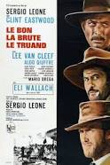
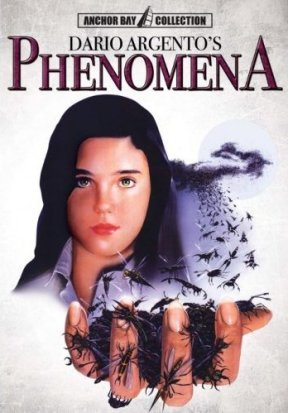
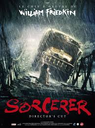

Sibylle de Laurens
Apprenante à Simplon
Our mission ---> be a dev
Our mission ---> be a dev
|  |
Le Bon, la Brute et le Truand, Sergio LeonePendant la Guerre de Sécession, trois hommes, préférant s'intéresser à leur profit personnel, se lancent à la recherche d'un coffre contenant 200 000 dollars en pièces d'or volés à l'armée sudiste. Tuco sait que le trésor se trouve dans un cimetière, tandis que Joe connaît le nom inscrit sur la pierre tombale qui sert de cache. Chacun a besoin de l'autre. Mais un troisième homme entre dans la course : Setenza, une brute qui n'hésite pas à massacrer femmes et enfants pour parvenir à ses fins |
|  | Phenomena, Dario ArgentoJennifer Corvino est la jeune fille d'une star du cinéma. Envoyée par son père dans une pension en Suisse, elle se sent seule et abandonnée, d'autant qu'elle souffre de somnambulisme. Des crises qui une nuit vont la mettre en contact avec le dangereux tueur en série déjà responsable du meurtre de plusieurs jeunes filles dans les environs. Parallèlement, elle se découvre un pouvoir extrasensoriel lui permettant d'entrer en communication avec les insectes. Traquée par le tueur et en proie à l'hostilité de son environnement, elle trouve refuge chez un entomologiste, John McGregor. |
|  | Sorcerer, Fred KinnQuatre étrangers de nationalités différentes, chacun recherché dans son pays, s'associent pour conduire un chargement de nitroglycérine à travers la jungle sud-américaine… Un voyage au coeur des ténèbres… |
this page has been code during the Simplon JS FullStack. That was propably the best experience in my entire life.